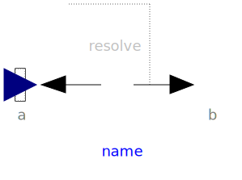
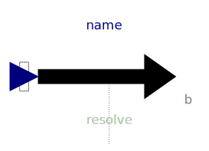
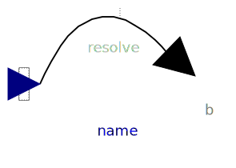

Package with models that are used to construct the models in package Forces. The models in this package should not be directly used by a user.
| Name | Description |
|---|---|
|  BasicForce | Force acting between two frames, defined by 3 input signals |
| Torque acting between two frames, defined by 3 input signals | |
|  BasicWorldForce | External force acting at frame_b, defined by 3 input signals |
|  BasicWorldTorque | External torque acting at frame_b, defined by 3 input signals |
|
|
Standard gravity fields (no/parallel/point field) |